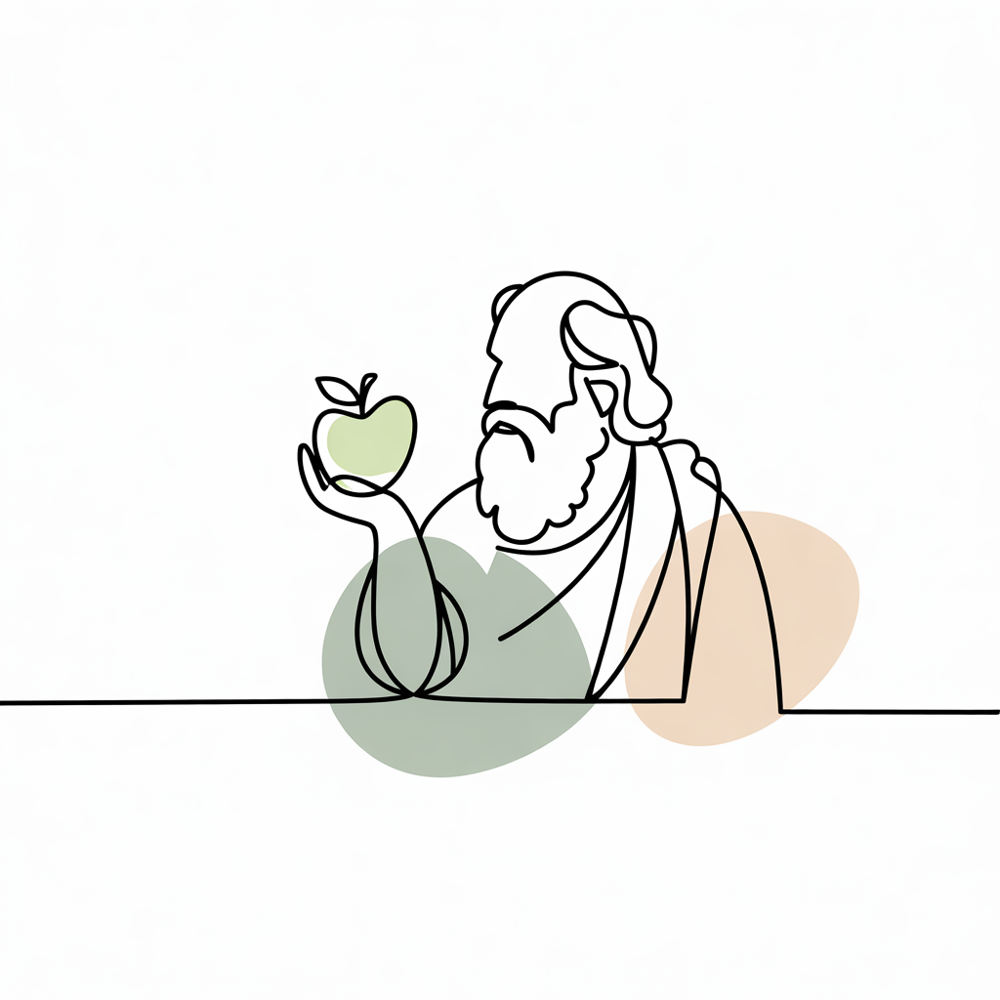

Phronesis: de gedachte achter Phrona

Phrona is vernoemd naar phronesis — een Grieks concept dat je het beste kunt vertalen als wijsheid goed kunnen inzetten in de praktijk. Het gaat om het vermogen om in complexe situaties de juiste keuze te maken, niet alleen op basis van kennis, maar ook op basis van inzicht in de context.
Gezondheid is zelden zwart-wit. Wat voor de één werkt, werkt voor de ander niet. Voeding, beweging, slaap, stress, cultuur en thuissituatie beïnvloeden elkaar voortdurend. Wij geloven dat goede begeleiding begint bij het begrijpen van die context. Niet het klakkeloos toepassen van een richtlijn, maar de juiste waarom-vraag stellen. Want kennis zonder context is maar half zo krachtig — pas als duidelijk is wat er speelt, heeft advies écht zin.
Daarin speelt ook de evolutionaire en gedragsmatige kant een rol. Veel van onze gewoonten rond eten en bewegen zijn diep geworteld in biologie, opvoeding en sociale omgeving. Dat negeren we niet, we werken ermee.
In de praktijk betekent dit dat we niet starten met een standaardplan, maar met een gesprek. Wat is jouw situatie, wat heb je al geprobeerd en wat speelt er op de achtergrond? Vanuit daar bouwen we samen iets op dat bij jou past.
Het resultaat is begeleiding die past bij jou als persoon, niet bij een gemiddelde. En dat is precies wat we proberen terug te laten komen in elk consult, met de tijd en aandacht om tot iets te komen dat écht werkt.
Benieuwd hoe we deze filosofie verder vertalen naar praktische tips en uitleg? Bekijk dan onze artikelen in de kennisbank.